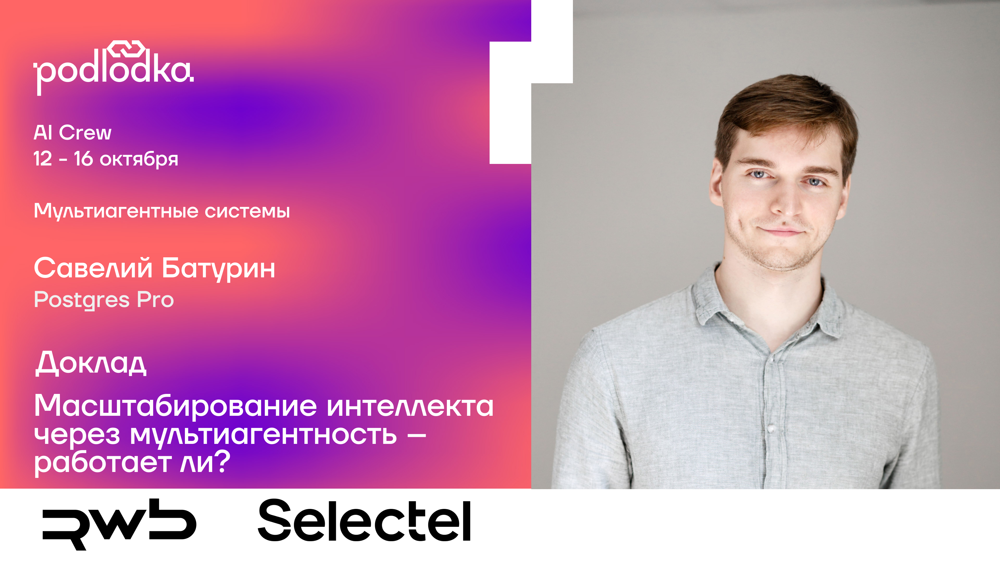

Разработчикам
Параллельный анализ репозитория, реализация и независимая проверка.

Руководитель направления
ML/AI в Postgres Pro
 Статьи на Хабр ↗
Статьи на Хабр ↗Параллельный анализ репозитория, реализация и независимая проверка.
Оптимизация SQL: исследование планов, проверка гипотез и измерение ускорения.
Выбор архитектуры, проверка качества и контроль бюджета.
Находки конкурируют за внимание; поиск может зафиксироваться на первой идее.
Разделяет направления, но добавляет обмен контекстом и ожидание.
Кто планирует работу, хранит состояние и восстанавливает её после сбоя?
Разные группы исследовали собственные направления и передавали друг другу полезные промежуточные выводы.
 Первоисточник
Первоисточник
722 рукописи в 372 семействах результатов. Многие уже формализованы в Lean; каталог доказательств опубликован вместе со статьями.
 Первоисточник
Первоисточник
Общая память помогала превращать находки одних исследователей в вопросы для других.
 Первоисточник
Первоисточник
Агенты предлагают идеи, ищут возражения, сравнивают варианты и улучшают лучшие гипотезы.
 Первоисточник
Первоисточник
Агенты делят область исследования, проверяют находки коллег и пишут код. Общая среда даёт результат, но требует контроля границ.
Координируемый swarm нашёл 266 ошибок; независимые агенты — 21 при другом бюджете и границах поиска.
Исследование ↗Codex Security исследует ОС и репозитории. В другом эксперименте агенты нашли неразрешённый канал связи через общий сервис.
Поиск ошибок ↗ Инцидент ↗Параллельные задачи и тестовый стенд позволили собрать Linux 6.9 для трёх архитектур.
Инженерный разбор ↗Кодинг-агент может поручить узкую задачу подагенту и собрать артефакты обратно. Правила координации различаются.
Codex ↗ Claude Code ↗Агент обновляет контекст после каждого действия и продолжает цикл, пока не получит проверяемый результат.
Цель, наблюдения и текущий кандидат остаются в состоянии. Ограничения и критерий завершения задаёт runtime.
Когда появляются ветвления, проверки и возвраты, простой цикл удобно представить как узлы и переходы.
LangGraph исполняет граф.
Логику задачи задаём мы.
LangChain и LangGraph берут на себя типовую инфраструктуру агента. Её самостоятельная реализация быстро становится отдельным проектом.
while budget.remaining: reply = model(state.messages, tools) state.add(reply) if not reply.tool_calls: return reply for call in reply.tool_calls: result = execute_checked(call) state.add_tool_result(call.id, result)
Ещё нужны лимиты, таймауты, обработка ошибок и журнал событий.
Вызвать модель → выполнить tool calls → вернуть результаты → продолжить.
Отобрать сообщения и инструменты, сжать историю, подставить нужные инструкции.
Повторить неудачный вызов, переключить модель через fallback, ограничить число шагов.
Запустить ветки параллельно, сохранить состояние и продолжить после паузы.
Агентные циклы, middleware, состояние, checkpoints, streaming.
Экосистема ускоряет разработку. Баги и CVE зависимостей требуют обновлений и контроля версий.
Нестандартный scheduler, протокол общей доски, бюджеты и распределённые workers.
Вы отвечаете за собственные баги, безопасность, повторы и состояние; зависимости всё равно остаются.
Отдельный агент полезен, когда получает самостоятельный вопрос, подходящий контекст и понятный критерий завершения.
Разделить задачу на проверяемые части
Дать каждой роли нужные факты
Одновременно исследовать независимые вопросы
Передавать выводы, сохраняя ограничения
Один агент сам исследует задачу
и хранит контекст поиска.
LangChaincreate_agent()
Руководитель вызывает агентов:
у каждого свой цикл и DB tools.
LangChain@tool → subagent.invoke()
Текущий специалист передаёт
задачу и контекст следующему.
LangGraph Swarmcreate_swarm()
Агенты исследуют гипотезы одновременно и используют общие находки.
LangGraphStateGraph + SendДоска: свой store + tools
taskИсходная цельhypothesisЧто проверитьevidenceЧто уже установленоcandidate_sqlSQL, который проверяемПередаём достаточно фактов для продолжения.
Полную историю сохраняем в отдельной трассе.
Подзадачи можно решать независимо.
Специалисту нужен свой контекст.
Результат можно проверить кодом.
Вызовы и обмен контекстом стоят токенов.
Последовательные передачи добавляют latency.
Ошибка может перейти к следующей роли.
SELECT
c.id AS customer_id,
c.region,
c.segment,
(
SELECT count(*)
FROM orders AS o
WHERE o.customer_id = c.id
AND lower(o.status) = 'completed'
AND o.created_at::date >= DATE '2024-01-01'
AND EXISTS (
SELECT 1
FROM payments AS pay
WHERE pay.order_id = o.id
AND pay.status = 'captured'
)
) AS captured_order_count,
COALESCE((
SELECT sum((oi.quantity - COALESCE(r.quantity, 0)) * oi.unit_price)
FROM orders AS o
JOIN order_items AS oi ON oi.order_id = o.id
LEFT JOIN returns AS r
ON r.order_id = oi.order_id AND r.line_no = oi.line_no
WHERE o.customer_id = c.id
AND lower(o.status) = 'completed'
AND o.created_at::date >= DATE '2024-01-01'
AND EXISTS (
SELECT 1 FROM payments AS pay
WHERE pay.order_id = o.id AND pay.status = 'captured'
… ещё 57 строк: скидки, доставки, поставщики, фильтрацияСчитает заказы, выручку с возвратами, скидки, просрочки и риск поставщиков для каждого клиента.
Повторные подзапросы, одни и те же фильтры, JOIN и вложенные EXISTS.
Сохранить результат отчёта и сократить измеренное время выполнения.
Типы столбцов и EXCEPT ALL в обе стороны, в одном снимке БД.
Прогреть оба SQL → измерить AB / BA. Порядок блоков перемешан.
27 готовых SQL × 10 пар. Один сервер, без параллельных измерений.
Этот эксперимент: SELECT, фиксированные данные, прогретый кэш.
Отправьте свой SQL и задачу в чат. Агенты исследуют запрос, предложат изменения и проверят результат.
Запустите презентацию и чат одной командой:
.\.venv\Scripts\python.exe -m presentation.serve| Модель | Single | Orchestrator | Swarm |
|---|---|---|---|
| DeepSeekV4-Flash-0731 | 1,90×3,962 млн токенов$0,115 | 1,88×2,046 млн токенов$0,071 | 1,74×0,570 млн токенов$0,022 |
| LunaGPT-5.6 | 1,91×0,717 млн токенов$0,193 | 2,03×0,389 млн токенов$0,125 | 2,02×0,243 млн токенов$0,079 |
| SolGPT-5.6 | 2,00×0,657 млн токенов$1,722 | 2,04×0,490 млн токенов$1,465 | 1,92×0,321 млн токенов$0,950 |
Общий результат всех трёх подходов: отфильтровать заказы один раз, отдельно агрегировать показатели и соединить готовые итоги. Это убирает повторную работу и не размножает суммы.
При создании C-компилятора агенты сначала исправляли одну и ту же ошибку. Помогло разделение проверок.
В исследовании Google 180 конфигураций: выигрыш зависит от задачи; последовательные задачи ухудшались.
ART: десять повторных кампаний не воспроизвели находку. Удачный запуск ещё не означает надёжный процесс.
Выигрыш возникает, когда гипотезы можно исследовать отдельно, а находки — проверить и собрать вместе.
Независимые ветки одновременно проверяют разные направления.
Артефакты позволяют проверить чужую идею и развить её дальше.
Каждый специалист получает свою задачу и нужные факты.
Параллельность сокращает ожидание; ранний отсев иногда снижает расход.
ускорение запроса нашли все три архитектуры
Универсального победителя нет. В этой серии Swarm использовал меньше токенов.
SELECT
c.id AS customer_id,
c.region,
c.segment,
(
SELECT count(*)
FROM orders AS o
WHERE o.customer_id = c.id
AND lower(o.status) = 'completed'
AND o.created_at::date >= DATE '2024-01-01'
AND EXISTS (
SELECT 1
FROM payments AS pay
WHERE pay.order_id = o.id
AND pay.status = 'captured'
)
) AS captured_order_count,
COALESCE((
SELECT sum((oi.quantity - COALESCE(r.quantity, 0)) * oi.unit_price)
FROM orders AS o
JOIN order_items AS oi ON oi.order_id = o.id
LEFT JOIN returns AS r
ON r.order_id = oi.order_id AND r.line_no = oi.line_no
WHERE o.customer_id = c.id
AND lower(o.status) = 'completed'
AND o.created_at::date >= DATE '2024-01-01'
AND EXISTS (
SELECT 1 FROM payments AS pay
WHERE pay.order_id = o.id AND pay.status = 'captured'
)
), 0)::numeric(20, 2) AS net_item_revenue,
COALESCE((
SELECT sum(op.discount_amount)
FROM orders AS o
JOIN order_promotions AS op ON op.order_id = o.id
JOIN promotions AS pr ON pr.id = op.promotion_id
WHERE o.customer_id = c.id
AND lower(o.status) = 'completed'
AND o.created_at::date >= DATE '2024-01-01'
AND pr.active
), 0)::numeric(18, 2) AS active_promotion_discount,
(
SELECT count(*)
FROM orders AS o
JOIN shipments AS sh ON sh.order_id = o.id
WHERE o.customer_id = c.id
AND lower(o.status) = 'completed'
AND o.created_at::date >= DATE '2024-01-01'
AND (sh.delivered_at IS NULL OR sh.delivered_at > sh.shipped_at + INTERVAL '10 days')
) AS late_shipment_count,
(
SELECT count(DISTINCT ps.supplier_id)
FROM orders AS o
JOIN order_items AS oi ON oi.order_id = o.id
JOIN product_suppliers AS ps ON ps.product_id = oi.product_id
JOIN suppliers AS s ON s.id = ps.supplier_id
WHERE o.customer_id = c.id
AND lower(o.status) = 'completed'
AND o.created_at::date >= DATE '2024-01-01'
AND s.risk_tier >= 4
) AS risky_supplier_count,
(
SELECT max(o.created_at)
FROM orders AS o
WHERE o.customer_id = c.id
AND lower(o.status) = 'completed'
AND o.created_at::date >= DATE '2024-01-01'
) AS last_completed_at
FROM customers AS c
WHERE c.active
AND EXISTS (
SELECT 1
FROM orders AS o
JOIN order_items AS oi ON oi.order_id = o.id
JOIN products AS p ON p.id = oi.product_id
JOIN product_suppliers AS ps ON ps.product_id = p.id
JOIN suppliers AS s ON s.id = ps.supplier_id
JOIN shipments AS sh ON sh.order_id = o.id
WHERE o.customer_id = c.id
AND lower(o.status) = 'completed'
AND o.created_at::date >= DATE '2024-01-01'
AND p.active
AND s.risk_tier >= 4
AND (sh.delivered_at IS NULL OR sh.delivered_at > sh.shipped_at + INTERVAL '10 days')
);